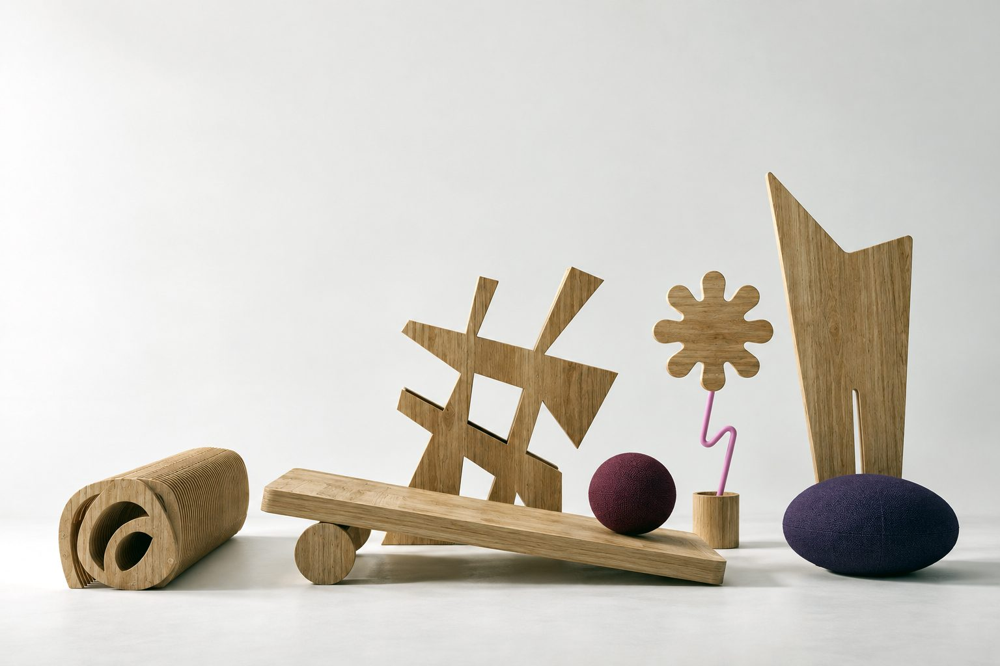
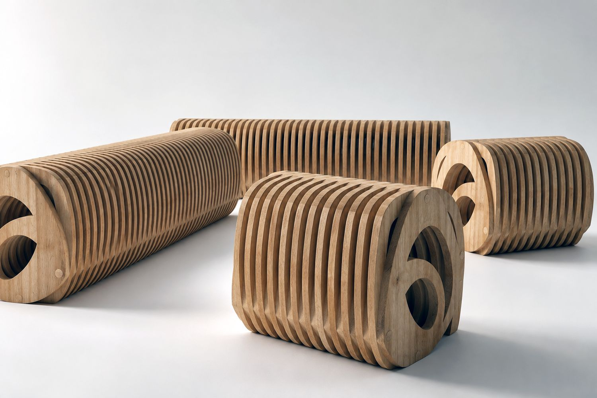
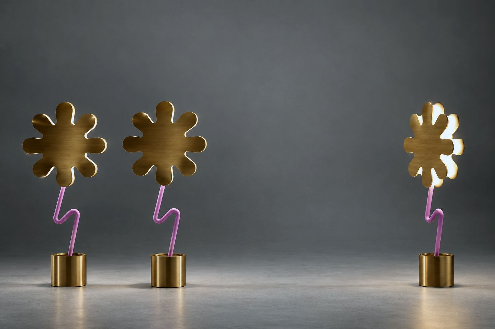
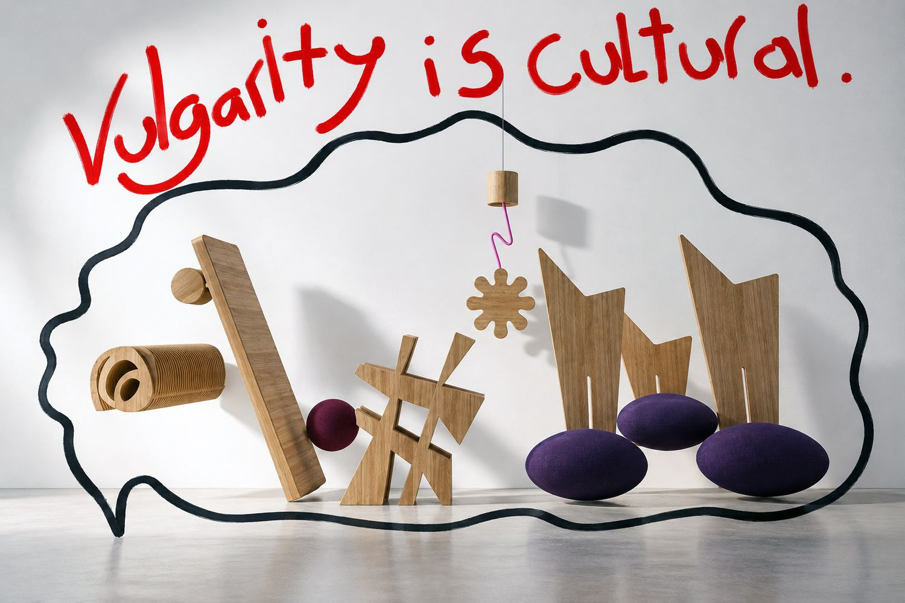
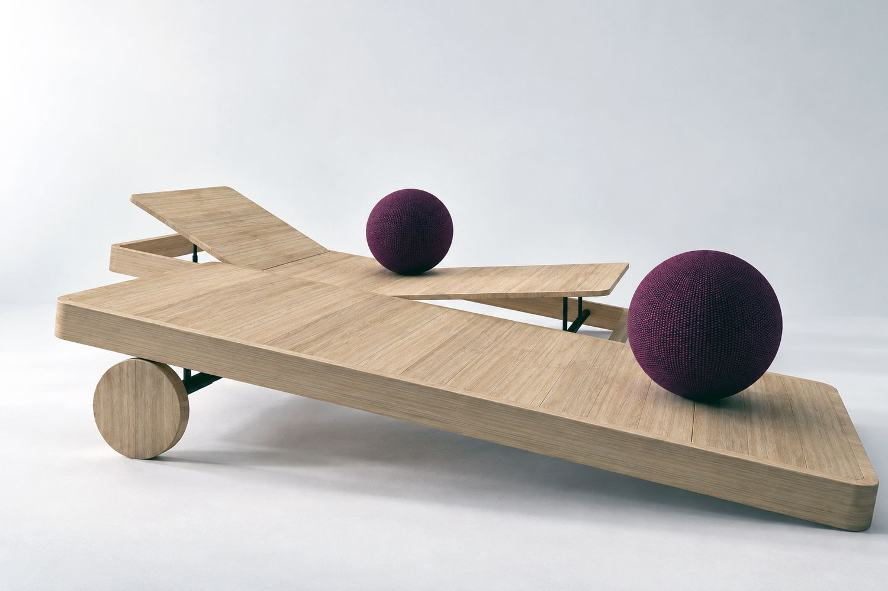
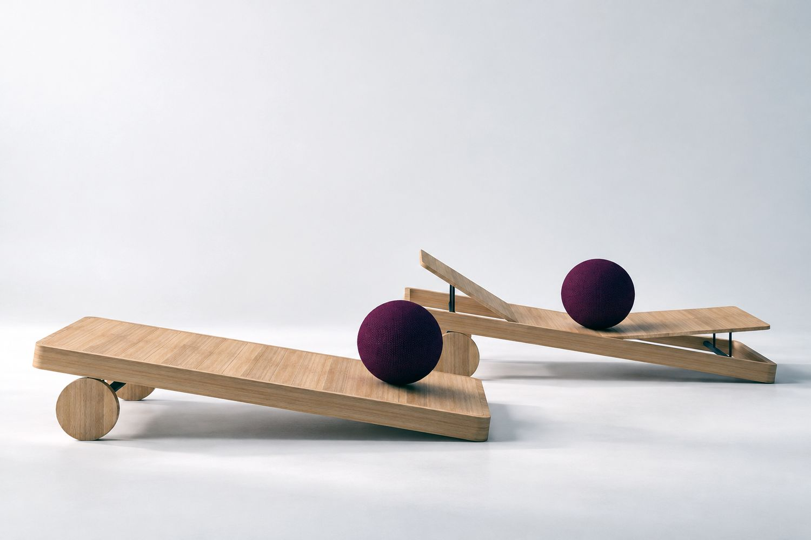

WORK 01 / 29
Grawliz
From censored symbols to playful sculptural objects.
Year2026
StageConcept

DESIGN STORY
Grawliz takes the visual shorthand of comic-book censorship—symbols used to replace profanity—and transforms it into furniture and objects. Enlarged and rearranged, these once-abrasive marks become playful sculptural forms. The collection questions how context changes meaning: what reads as offensive in one setting may be humorous or familiar in another. By giving the language of censorship an everyday function, Grawliz asks where vulgarity ends and culture begins.




